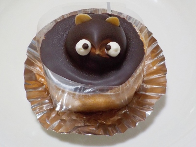

日持ちがいいタヌキのケーキ。
更新日 : 2026/09/25

ローカルメディアなどにたまに出てくるタヌキのケーキです。お店によっては色んな顔があったりしますが、ここのは同じ顔をした可愛いタヌキでした。
小さいロールケーキの上にタヌキが乗っています。表面のチョコは固く、カットして食べれなかったのでフォークを挿してかぶりついて食べました。
昔のイメージと違って、何かと斬新な商品だなと思いました。
更新日 : 2026/09/25

ローカルメディアなどにたまに出てくるタヌキのケーキです。お店によっては色んな顔があったりしますが、ここのは同じ顔をした可愛いタヌキでした。
小さいロールケーキの上にタヌキが乗っています。表面のチョコは固く、カットして食べれなかったのでフォークを挿してかぶりついて食べました。
昔のイメージと違って、何かと斬新な商品だなと思いました。